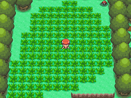

The fourth generation of pokemon games added an incredibly interesting shiny hunting method.
Shiny hunting in the Sinnoh games introduced key innovations. The Poké Radar allowed players to chain encounters with the same Pokémon in grassy patches, dramatically increasing shiny odds with careful movement and planning. This method became a fan favorite for its potential speed and challenge. The Masuda Method also debuted in these titles, where breeding two Pokémon from games in different languages boosted shiny chances, making egg hunting more viable than ever before. 
While Heart Gold and Soul Silver didnt add any new shiny hunting methods to the game, there were still a few things that shiny hunters could enjoy. The masuda method made its way over from the main-line games, and the shiny gyrados remained in the lake of rage. One other item that was enjoyed by shiny hunters was hunting for the starters. When you would receive your starter, you could see the sprites of all three, and that sprite would show if it was shiny or not, masively increasing the odds for the player to find at least one of them shiny!